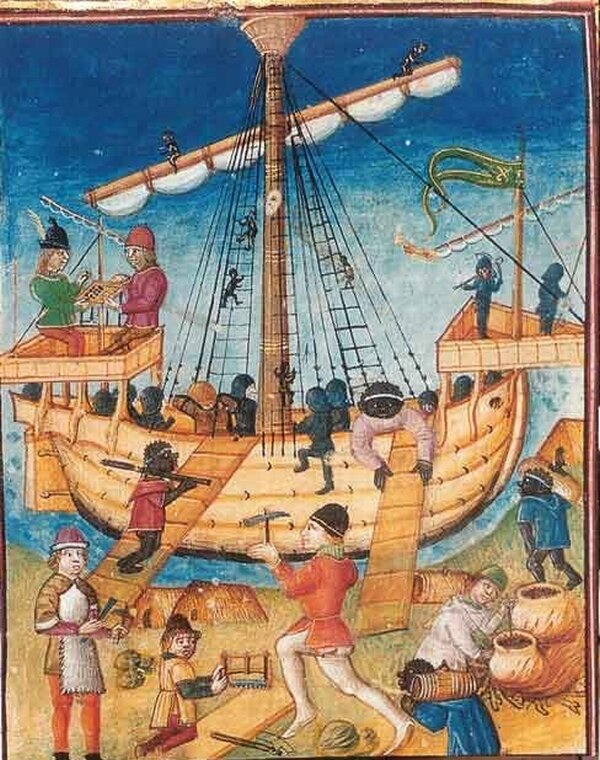
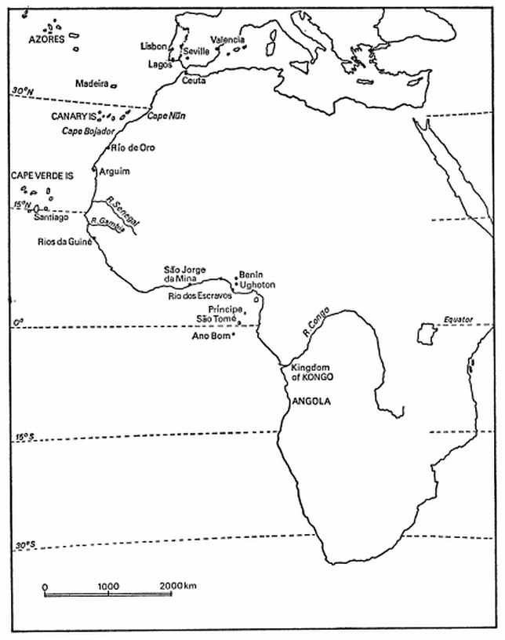
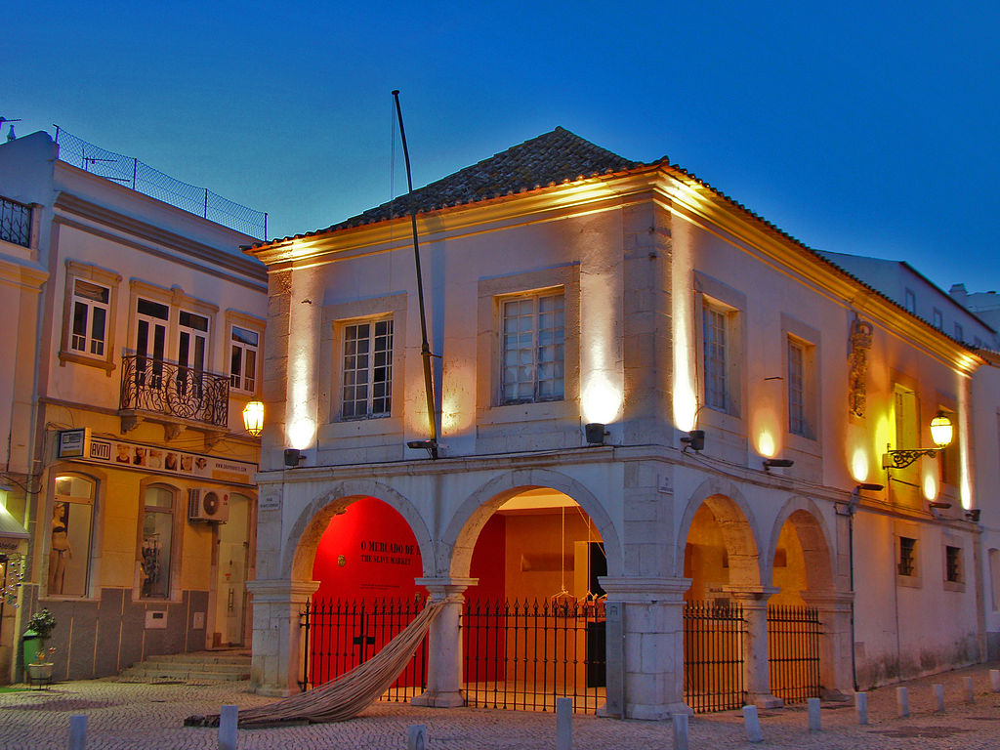
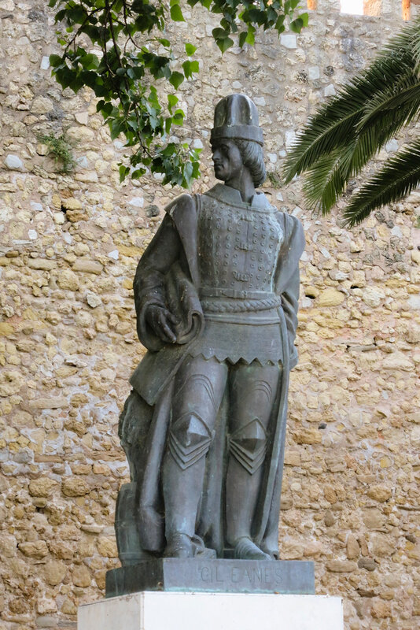
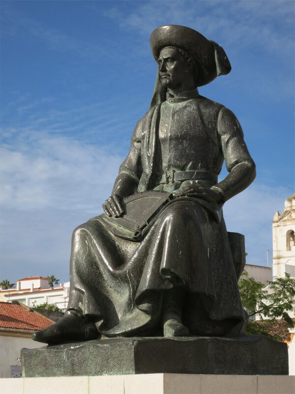

Каравелла – корабль португальских работорговцев
Все площади заполнены рабами. Невольники – чернокожие и мавры – выполняют все работы; Португалия настолько заселена этими людьми, что создается впечатление, будто в Лиссабоне рабов и рабынь больше, чем свободных португальцев…
Николас Кленартс, Письма друзьям во Фландрию (Nicolas Clenardus Epistolarum libri duo…), 1566
Как мы уже несколько раз говорили по ходу нашего рассказа, водоизмещение первых португальских каравелл было невелико. И добавление прямого паруса не превратило этот корабль в нао, или, другими словами, каракку, эти два типа кораблей продолжали развиваться самостоятельно. Главное достоинство каравелл – небольшая осадка и высокая маневренность – делала их незаменимыми в набиравшей темпы торговле рабами из Африки.
Использование рабского труда в экономике европейских стран не было в то время чем-то удивительным, но приведенный в эпиграфе отрывок из письма фламандского гуманиста, посетившего Португалию в 1535 году, подчеркивает, что в Португалии, как ни в одной стране Европы, было очень большое число невольников из Западной Африки. Захват и покупка рабов стали одной из основных целей спонсируемых Генрихом Мореплавателем походов португальских кораблей вдоль западноафриканского побережья. Поиск новых поставщиков черных невольников толкал португальские корабли все дальше на юг. Мы уже отметили, что процесс этот начался в 40-х годах XV века, а к середине века шестнадцатого число чернокожих невольников уже превысило численность рабов-мавров. Португалия стала первой европейской страной, где рабство чернокожих являлось обыденной картиной повседневной жизни общества.

Миниатюра из Museum of the Forte da Ponta da Bandeira, Лагуш, Португалия.
Мы не будем сейчас вникать в подробности этого процесса. В части, касающейся использования чернокожих рабов на галерах, мы уже разобрались ранее. С использованием рабов в других сферах трудовой деятельности можно ознакомиться по многочисленным работам в научной литературе. Для Португалии, в частности, хорошим введением в тему может служить книга A. C. de C. M. Saunders A Social History of Black Slaves and Freedmen in Portugal, 1441-1555 (Cambridge University Press, 1982). Нас будет интересовать лишь увязка этой темы с историей парусных кораблей XV-XVI вв., которой мы сейчас занимаемся.
Первый рейд за рабами, как мы уже отмечали, состоялся в 1441 году, когда экипажи двух португальских судов высадились на берег в районе Рио-де-Оро (Западная Сахара) и захватили несколько местных жителей, представителей берберского племени Idzāgen.

Карта западного побережья Африки
Случайным образом вместе с пленниками-берберами у португальских моряков оказалась чернокожая рабыня одного из них. Через два года эти португальские каравеллы вернулись в тот же район для того, чтобы обменять пару берберских аристократов на десять черных рабов и «горшочек маслица золота». В 1444 и 1445 годах были снаряжены еще две экспедиции из Южной Португалии (район Алгарви). В ходе первой экспедиции было захвачено 235 берберов и их чернокожих рабов, которых тут же продали на первом, как говорят, европейском невольничьем рынке в Лагуше (Lagos). В городе и сейчас стоит здание таможни XVII века, которое находится на том самом месте, где располагался этот рынок.

Там же неподалеку стоит памятник Жилу Эанешу, впервые обогнувшему мыс Бохадор,

Памятник Жилу Эанешу (Gil Eanes), скульптор Canto da Maia, 1948 г., Лагуш, Португалия
и памятник Генриху Мореплавателю

Памятник инфанту Энрике, скульптор Leopoldo de Almeida, 1960 г., Лагуш, Португалия
Вторая из упомянутых выше экспедиций была не столь успешна, она заставила сделать далеко идущие выводы: местные племена уже не так доверчивы, они готовы отразить военные рейды португальцев. Военные методы получения рабов должны уступить место торговым операциям и сделкам с местными берберскими вождями. В 1445 году брат и соперник Генриха Мореплавателя инфант Педру снарядил экспедицию под командованием Гомеша Пиреша, в результате которой был заключен договор с вождями Rio de Oro по обмену их черных рабов на португальские товары.
Но каким бы способом ни добывали португальцы рабов, для их доставки в Европу требовались корабли. Использовали для этой цели как тяжелые нао, так и более легкие каравеллы. В первых походы ходили каравеллы с полностью латинским парусным вооружением (caravela latina). Это были однопалубные корабли водоизмещением от 50 до 100 тонн, вмещавшие до 150 рабов. Для более мелких партий использовались меньшие по грузовместимости корабли – их называли каравелано (caravelão) – водоизмещением 20-25 тонн, на которые помещались до 30 рабов.
Экипаж средней по размерам каравеллы не превышал по численности тридцать человек, в том числе командный состав: капитан, штурман и секретарь (escrivão). Последний являлся представителем короны и наблюдал за соблюдением правил торговли, даже если корабль принадлежал не государству, а частному владельцу. Остальные члены экипажа делились на квалифицированных моряков (marinheiros) и простых матросов (grumetes); в отдельных случаях на борту находились также юнги (pagens).
К началу XVI века в состав команды каравелл стали включать матросов из чернокожих рабов, как мы можем увидеть на миниатюре, приведенной в начале поста. Так на каравелле Santa Maria das Neves, которая совершала в 1505-1506 гг. регулярные рейсы между Лиссабоном и устьем реки Гамбия, семь из 14 простых матросов и один из девяти квалифицированных моряков были чернокожими (см. упомянутую выше книгу Saunders’а). Судя по документам, разницы в оплате их труда на корабле не было, однако если негр был рабом, его жалованье получал капитан. Отмечалось даже продвижение чернокожих моряков по служебной лестнице. Однако в 1517 году вышел запрет чернокожим занимать должность капитана на судах, совершавших плавание между Зеленым мысом и Гвинеей. Этот запрет включал всех чернокожих, независимо от того, был ли он рабом или свободным.
По наблюдениям одного француза, включение рабов в состав экипажей португальских кораблей изменило тактику их действий в случаях, если корабли подвергались атаке французских или английских корсаров. Португальцы предпочитали открывать артиллерийский огонь на большой дистанции от противника, так как опасались, что в случае сближения с врагом рабы из состава их экипажей могут поднять бунт, надеясь получить освобождение в случае захвата противником их кораблей. Впрочем, это мнение может быть и предвзятым, а португальцы просто опасались за состояние их живого груза, если корабли сблизятся на малую дистанцию.
Корабли, которые должны были отправиться в Африку за рабами, прибывали на рейд Лиссабона, где принимали на борт инспекторов из специального ведомства Casa da Guiné. Инспектора первым делом проводили учет тех предметов на корабле, которыми запрещалось торговать с коренным населением Западной Африки: изделия из железа, в том числе кандалы, оружие, корабельные припасы всех видов. Для обмена разрешалось использовать ткани, старую одежду, украшения из стекла, латунные и бронзовые браслеты, тазы, горшки и прочие предметы домашнего обихода. Вождям разрешалось дарить лошадей или просто конские хвосты, символы их власти. Вино как предмет торговли ценности не имело до конца шестнадцатого века.
Убедившись, что на борту все в порядке, инспектора покидали корабли, которые тут же оправлялись к берегам Африки.
Обращение с чернокожими рабами на борту корабля было регламентировано специальным распоряжением только при короле Мануэле I (правил в 1495-1521 гг.). Согласно этому королевскому указу, каждый невольник должен иметь деревянные нары для сна, расположенные под укрытием от непогоды и солнца. Во время плавания штурман (а именно это должностное лицо отвечало за содержание груза на борту) должен был обеспечивать питание невольников. В рацион необходимо было включать батат (yams, ямс), фрукты (косточковые, caroços), бананы, местный перец и специальные палочки для чистки зубов. Штурман обязан был также следить, чтобы предназначенный для невольников провиант не разворовывался. Хотя сделать это было непросто, так как единицы измерения (щепотка, пригоршня, кусок и им подобные) были весьма примитивны и не защищали от злоупотреблений.
Обитаемость каравелл и нао была ниже всякой критики. Единственно, что соблюдалось неукоснительно – это раздельное содержание рабов и рабынь. Причина тут была банальна: в присутствии женщин мужики становились агрессивными и, подстрекаемые женами, могли пойти на нежелательные героические подвиги, чтобы завоевать свободу. Смертность на переходе была не очень высокая, обычно от 1 до 5 процентов, хотя на перегруженных рейсах она достигала и 18-25 процентов. Переход от острова Аргуин (у побережья Мавритании) до метрополии занимал около двадцати суток, по крайней мере не больше месяца, при благоприятной погоде. Если переход был более длительным, смертность резко повышалась, достигая иногда до 30 и даже 40 процентов.
Мы в дальнейшем посмотрим, как приведенные здесь требования к конструкции каравеллы для перевозки невольников учитывались на практике. А сейчас – до следующего раза.